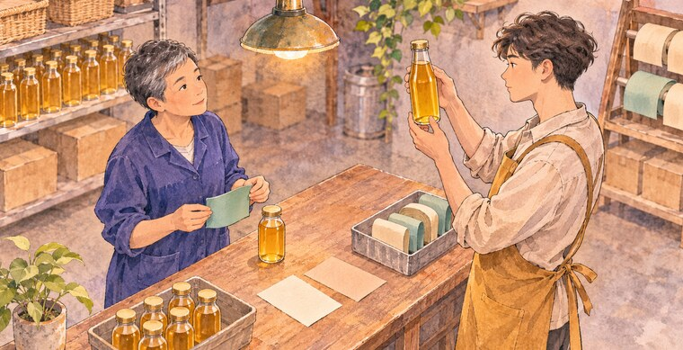

MKT-41 · Hong Kong · 12–15 minutes · Packaging · Claim comprehension · A/B testing · Channel execution
Less sugar. More in the bottle?

What does the number on a bottle measure?
Hong Kong’s Consumer Council reported a test of 30 bottled green teas in 2006, including laboratory testing for total sugars. A separate Centre for Food Safety survey covered sugars in non-alcoholic packaged drinks, including teas. These are dated examples of why consumers need to read the unit next to a number, not evidence about today’s shelves.
Your classroom decision
The marketing team at fictional Harbour Leaf plans to introduce a reformulated green tea in a larger bottle. The retailer wants the front panel ready this week. Design A leads with a comparison versus Harbour Leaf Classic on an equal-volume basis; design B leads with two plain readings side by side: grams per 100 mL and grams per whole new bottle. Both mock-ups show the same fictional product, price, and nutrition panel.
In a fictional randomized shelf mock-up, each shopper saw only one design for three seconds, then answered two questions. The team will advance a design only if at least 60 out of 100 report purchase interest and at most 12 out of 100 wrongly say the whole new bottle has less sugar than Classic. This is a comprehension gate, not proof of sales or legal approval.
| Fictional pack | Sugar per 100 mL | Bottle size |
|---|
| Classic | 13 g | 330 mL |
| New | 7 g | 650 mL |
| Shelf mock-up, 100 people each | Interested in buying | Wrongly think the whole new bottle has less sugar |
|---|
| A: comparison first | 74 | 39 |
| B: both bases visible | 61 | 7 |
Your decisionHow much lower is the sugar per 100 mL, and does the whole new bottle contain less sugar? Which design should go to the next test under the team’s rules?
Round 2 · More information
A mobile retailer trims the image in its product listing. B now shows the 100 mL figure but hides the whole-bottle line on first view. Design C puts both values in plain listing text before the image. In a new fictional randomized phone test, the same targets apply to each phone design separately.
| Phone listing, 100 people each | Interested in buying | Wrong whole-bottle inference |
|---|
| B as cropped | 64 | 16 |
| C: both bases above the fold | 60 | 9 |
Your decisionWhich phone design should advance? If B’s shelf and phone samples are pooled, would it appear to pass the comprehension gate? What does pooling hide?
Debrief · Compare like with like
At equal volume the difference is 13 − 7 = 6 g per 100 mL, or 6 ÷ 13 ≈ 46% lower than Classic. The old bottle contains 13 × 3.3 = 42.9 g; the new one contains 7 × 6.5 = 45.5 g, an increase of 2.6 g per bottle. Lower concentration and lower total content are different claims.
Debrief · Comparison is not low sugars
The concentration meets the two numerical difference tests of 25% relative and 5 g per 100 mL absolute, but the new recipe is not low in sugars under the 5 g per 100 mL limit. The test does not clear the actual packaging for legal use.
Debrief · Use both gates
On the shelf A wins on stated interest (74 versus 61) but fails the comprehension gate (39 exceeds 12). B reaches both targets, 61 and 7. On phones, cropped B misses the local comprehension gate at 16 false inferences; C meets both at 60 and 9. Pooled B shows 23 wrong answers in 200, or 11.5%, so it appears to pass. It hides a 16% error rate on phones, where the team must make a separate decision.
Debrief · Draw the right conclusion
Advance B on the shelf and C on phones to a larger follow-up, not to a print order. One fewer interested phone respondent would put C below the interest cutoff. Report each channel, use a fresh comparable sample and capture real choices where possible. A quick stated-interest result does not measure actual purchases or repeat behavior.
Instructor note
Ask students to name the unit before answering. If someone chooses A based on interest, ask what a customer who drinks the whole bottle would actually get. Discuss why a single pooled dashboard figure is inappropriate when each channel needs to meet the gate.
Round two
A mobile retailer trims the image in its product listing. B now shows the 100 mL figure but hides the whole-bottle line on first view. Design C puts both values in plain listing text before the image. In a new fictional randomized phone test, the same targets apply to each phone design separately.
| Phone listing, 100 people each | Interested in buying | Wrong whole-bottle inference |
|---|
| B as cropped | 64 | 16 |
| C: both bases above the fold | 60 | 9 |
Your decisionWhich phone design should advance? If B’s shelf and phone samples are pooled, would it appear to pass the comprehension gate? What does pooling hide?